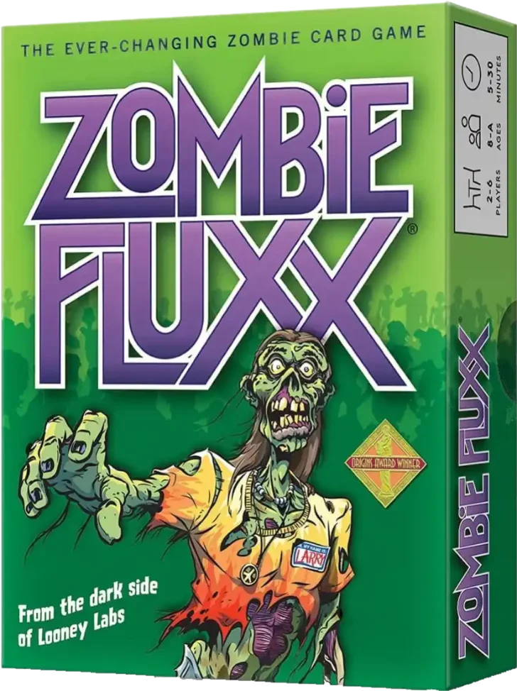
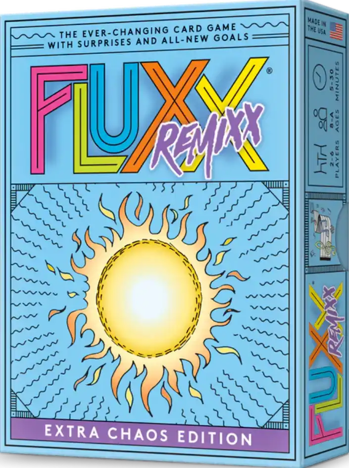
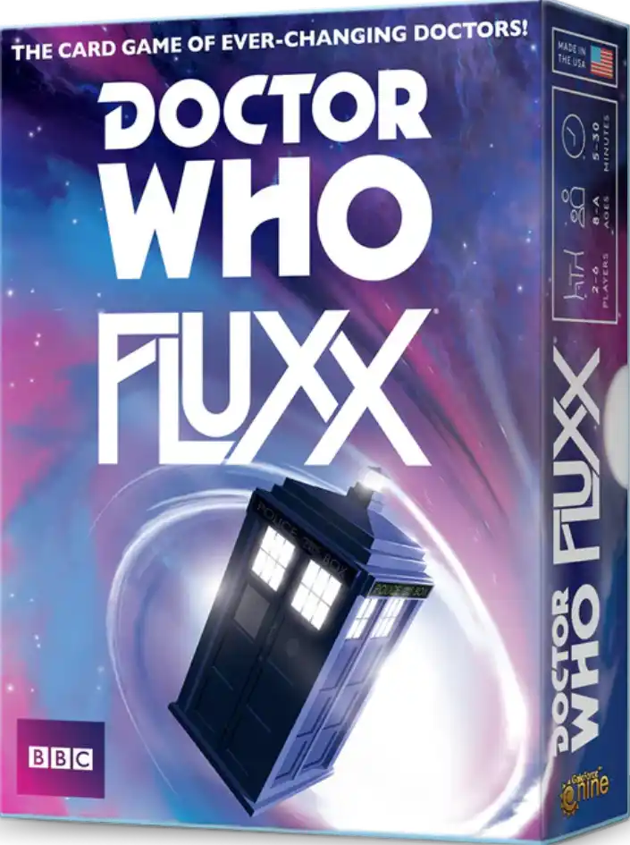
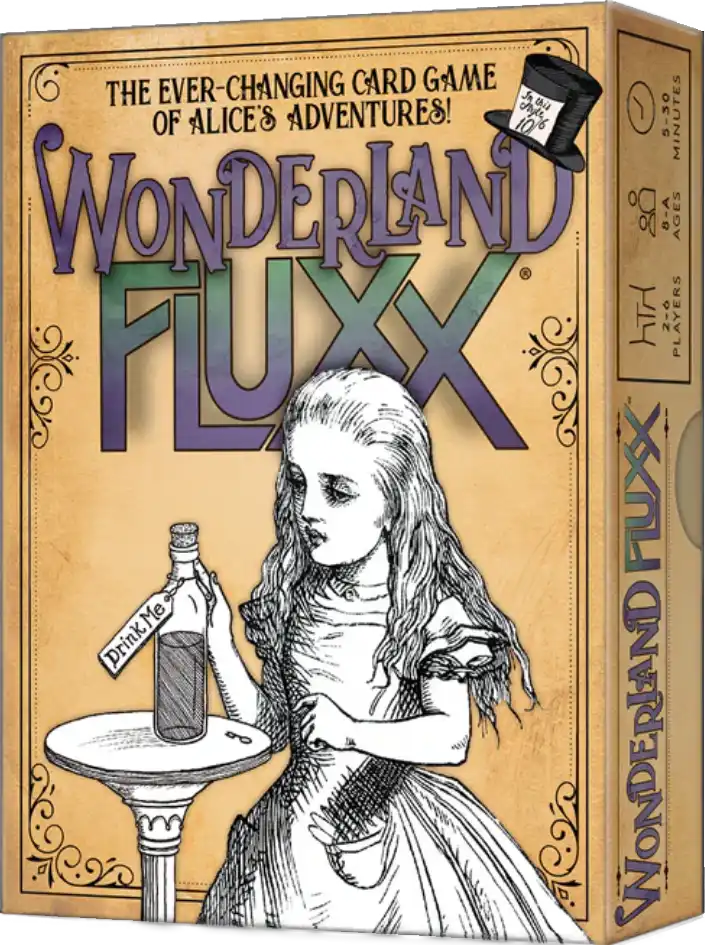

About The Game
Fluxx is a card game published and made by Looney Labs. What makes it unique is
that the rules and the conditions for winning are altered throughout the game,
via cards played by the players. It is described as "The card game with ever-changing rules!" there are about 30+ differnt versions of the game.
The first edition deck consists of 84 cards with four types of cards: Keepers, Goals, Actions, and New Rules.
While the game begins by requiring players to simply draw and play a specific number of cards,
the mechanic mutates when a New Rule card is played. The card may change the number of cards drawn or played per turn,
the number of cards held per hand, or the Keepers played.
The Goal cards change the Keepers needed to win the game. Games last from 5 to 30 minutes.
Later sets sometimes included new card subtypes, depending on the theme of the set.
These included Creeper cards that block or make goals more difficult to obtain; Ungoal cards,
which have conditions where the game ends with no winner; and Surprise cards, a 2011 addition,
which allow players to negate other types of cards which could prevent a victory and can be played at any time,
though they have other effects when played on one's own turn.
From looney labs about page:
Looney Labs was founded in 1997 by two former NASA engineers named Looney.
The husband and wife team have been creating fun ever since, with Andy inventing the games,
and Kristin running the company. Along with the help of four other full-time employees, several part-timers,
and an army of fans, the Looneys are changing the way you play!
history
Fluxx was created by Andrew Looney on July 24, 1996 as the first game for Looney Labs, a small games company established by husband-and-wife team Andy (who invents the games) and Kristin Looney (who runs the company as its Chief Executive Officer). The original print run was for 5,000 units and was released in 1997. The game was successful and was licensed a year later to Iron Crown Enterprises (ICE) for wider distribution. ICE went bankrupt two years later and Looney Labs resumed publication and distribution. By March 2001, Labs was considering putting out another standalone deck version called Fluxx++ using cards created by the Fluxx playing community with Fluxx Blanxx and Fluxx: Goals Galore, an expansion consisting of goal cards, based on its Origins 2000 5 Goal cards promo pack.[5] Labs created Fluxx Lite, a slimmed down 56 card deck to lower the price for discount superstores, in design by March 2002. In 2003, Amigo Games, a German game company, licensed and published a German language version of Fluxx. The in design Fluxx Reduxx was indefinitely placed on hold as of July 14, 2005 to focus on EcoFluxx. Looney Labs registered the Fluxx trademark. By October 2005, Stoner Fluxx had been released and EcoFluxx was in play testing, and scheduled to be released later that month followed by Family Fluxx. In November 2006, Looney Labs issued a Spanish language edition of the game. The October 10, 2007 release of a zombie-themed version brought the first of a new card type, the Creeper and Ungoal. In 2008, Toy Vault and Looney Labs co-published and released Monty Python Fluxx. Fluxx edition 4 was released in December 2008 and was the first set to have the Meta Rule subtype card, which stemmed from a Fluxx Tournament rule. In 2008, Zombie Fluxx won the Origins Award for Traditional Card Game of the Year. Stoner Fluxx was placed back in print under the Full Baked Ideas imprint of Looney Labs on November 13, 2009 after being out of print for four years. Full Baked was launched with expectation of a future release of a drinking variant and other mature subject versions. Two variants were re-released on March 5, 2010, EcoFluxx and Family Fluxx, with Eco being a new edition. In February 2011, the Surprise subtype of cards were introduced in the Pirate Fluxx themed variant. In March 2011, the German language version 2nd edition was released by Pegasus Games. By May 2011 over 1 million decks of all Fluxx versions had been sold while Pirate Fluxx was getting into bookstores that month. On August 1, 2012, Looney Labs got a simplified, less expensive general market version with redesigned packaging of Fluxx into Target stores. For the summer 2012, Fluxx was number 10 in ICv2's Top 10 Card/Building Games (hobby channel). A Cartoon Network version of the game was made available as a Target exclusive from mid-August 2014 until Easter 2015, while in July the Regular Show Fluxx was released to the hobby market. The fifth edition of the regular Fluxx game was made available beginning in 2014 as the 4.0 edition ran out. Looney Labs teamed up with The Doubleclicks for a Fluxx theme song. A new expansion of the game, Fluxx Dice, plus two new licensed variants were scheduled to be released in the summer of 2015. With a delay of the first variant to be released at the polled requested of the retailers, Looney Labs pushed back the dice and the other variant to stagger the releases to spread out the impact. A series of educational variants were released in 2017 and 2018. In partnership with Gale Force 9, two Fluxx versions of Star Trek were released in August 2018.
The best version for geting started
For those who are new to fluxx you might be overwhelmed by all the differnt versions of it so i will discuss the best one for some one to start off with. well it is pretty simple the best one would be the orignal one Fluxx 5.0, it only has the basic card types goals keeper new rules and actions cards.
Expansions
Expansions are collections of cards that "expand" upon a deck to provide more varied play, or to add something new or "missing" (like characters) to an existing deck. They are often released at the same time as their "parent deck" or soon after, consisting of cards cut for space from the main deck, but which the designer or fans felt were too important to lose completely. Others are released sometime after the main deck (occasionally years later), either to "update" the deck based on new material (such as the 13th Doctor Expansion, which added characters and situation aired on the Doctor Who television show after Doctor Who Fluxx was printed). Many Expansions - such as the "More Packs" - are "generic" and self-contained, designed to be added to any Fluxx deck; others are so specific that they can only expand play for one variant (such as the 7 New Cards from the Future Pack, which has no functionality if added to any deck except Regular Show Fluxx).
Expansions are normally packaged in cellophane. foil, or polybag for sale or distribution, and are often sold by specialty game stores in addition to the Looney Lab webstore. They include anywhere from 4 to 16 cards bundled and sold as a set, and are variously called Expansions, Expansion Packs, Booster Packs, Promo Packs, or even just "Packs" (with little rhyme or reason apparent). Cards from Expansions are sometimes offered individually as well, either before or after inclusion in an expansion pack, in which case they are also listed on the Promo Cards page.




